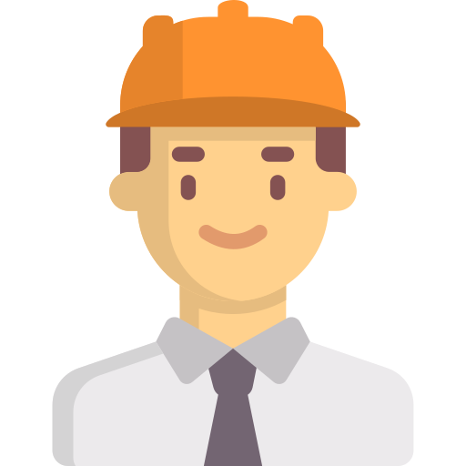
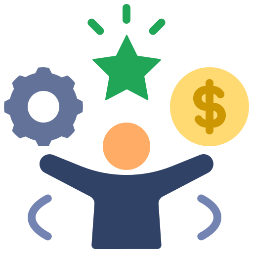

Education
Degree in Engineering Science (EEE)
Masters in Technology
Nanyang Technological University (NTU)
2016

2017
Electrical Engineer
Keppel FELS

2018
Intrapreneur: Online bunkering platform
Keppel FELS
2019
Project Manager
Synapxe
2021
Algorithmic Trader
Grasshopper
2023
ISO Quality Rep
Thai Eastern Wire
🤖
2025
Budding AI/ML Engineer
AIAP Applicant
Why ML?
I'm passionate about solving business problems through technology and data-driven insights. ML represents the perfect intersection of systematic problem-solving, strategic thinking, and hands-on engineering.